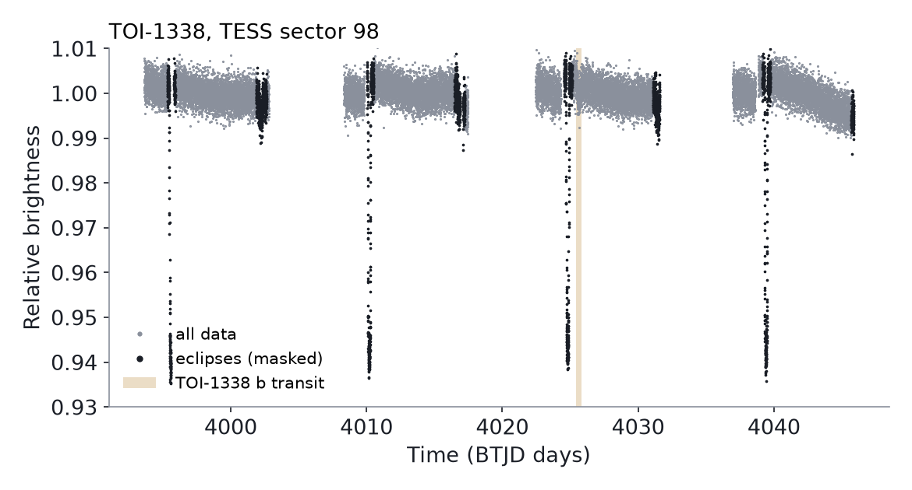
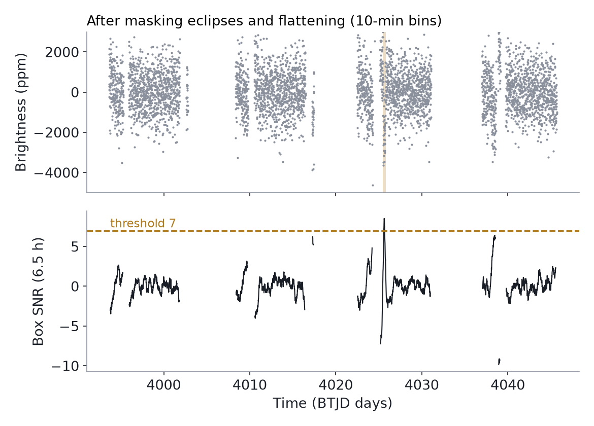
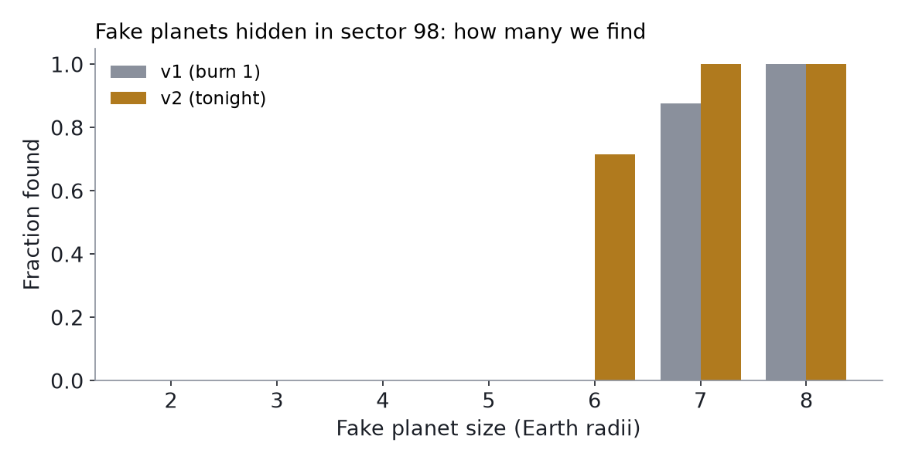

8. Our detector: finding a dip in the noise¶
In plain words
Ahmed, this is the heart of the hunt: a program that scans a light curve and points at dips that might be planets. On 20 October 2026 we rebuilt it ("v2") and tested it honestly. It finds the known planet TOI-1338 b in half the sectors where it crossed. It catches fake planets about 6 times Earth's size and up, but not smaller ones, in a star this bright. This chapter shows how it works, step by step, and why the limit is mostly the data, not the code.
What this chapter answers: how does our search decide "this might be a planet", and how good is it?
8.1 The intuition¶
You're listening for a quiet whistle in a noisy room. A single loud clap could fool you, so you don't react to one instant. Instead you ask: "is it consistently a bit different for a few seconds?" A long, steady change is easier to pick out than a single blip, even if it's quiet.
A transit is that steady change: a small dip lasting hours. Our detector averages the light over a few hours at a time and asks whether any stretch is unusually dim compared with how much stretches normally wobble.
8.2 The scientific meaning¶
The method is a matched filter with a box shape: we slide a box-shaped template of a given length along the data and measure how dim each stretch is. The key number is the signal-to-noise ratio (SNR):
SNR = (how much dimmer this stretch is) ÷ (how much stretches of this length normally vary)
An SNR of 7 means "seven times bigger than a normal wobble". We use 7 as the bar, close to NASA's 7.1 LIKELY. But a bar only means something if we measure how often noise alone crosses it. That's why we also run the search on flipped data (section 8.5).
8.3 The technical explanation¶
The steps, with every symbol:
- Mask the eclipses. The stars eclipse each other every binary period Pbin. We use the known Pbin (14.6084 days for TOI-1338) and find where in that cycle the deep eclipse falls in each sector. Data within 1.5 eclipse-lengths of either eclipse is set aside.
- Flatten (detrend). Stars and the spacecraft cause slow drifts. We fit a smooth curve with a moving window of 2 days (a "biweight", which ignores outliers) and divide it out. The window must be much longer than a transit, or the flattening eats the dip. v1 used 1 day, which was too short for 6-hour dips.
- Bin. Average the 2-minute points into 10-minute bins.
- Slide boxes. For each length D in 3, 4, 5, 6.5, 8, 10, 12 and 15 hours, compute the average brightness m of every D-long stretch.
- Score. For each length, SNR = (median − m) ÷ σD, where σD is the robust spread of all the box averages of that length (1.4826 × the median absolute deviation, a version of the standard deviation that isn't thrown off by a few odd values).
- Keep peaks with SNR ≥ 7 and merge overlapping ones into one event.
Why step 5 measures the spread from the box averages themselves: if the noise were purely random ("white"), averaging N points would shrink it by √N. Real data has slow wiggles ("red noise") that don't average away. Measuring the spread of real box averages includes those wiggles, so the SNR stays honest.
8.4 Our implementation (the code)¶
All of this is in pipeline/detect_v2.py, about 130 lines. The important functions:
| Function | Input | Output | What can go wrong |
|---|---|---|---|
load(path) |
a SPOC light-curve file | time t, flux f, number of gaps filled |
missing PDCSAP data (filled from SAP) |
eclipse_mask(t, f, P, ...) |
data + binary period and eclipse lengths | which points to keep | wrong period or eclipse lengths leave eclipse edges in |
detrend(t, f, window_d=2.0) |
kept data | flattened flux | gaps create edge effects (Figure 8.2) |
box_scores(bt, bf, dur_h) |
10-min bins, one length | box centres, SNR, box averages | too few bins → no score |
find_events(t, f, thr=7) |
kept data | list of events (time, length, SNR, depth) | noise bumps above 7 (false alarms) |
Running python detect_v2.py runs a self-check: 27 days of pure random noise must give no event, and a hidden 6-hour, 700 ppm dip must be found at the right time. Both pass (CONFIRMED, ran on 2026-10-20).
8.5 Worked example: TOI-1338, sector 98¶


The search finds the transit with SNR 9.0, depth about 2,100 ppm, about 1.1 hours after Wang and Liu's predicted time VERIFIED.
How good is it? Three honest tests¶
1. Re-finding the known planet. TOI-1338 b crossed in 8 sectors where we have data at the right moment. v2 finds it in 4 VERIFIED. In the 4 it misses, the dip is only 3.7 to 6.5 times the noise: below our bar.
2. Fake planets. We hid computer-made transits of known sizes in sector 98 and ran the search VERIFIED:

3. False alarms. Turn the light curve upside down (2 − flux). Now any real dip becomes a bump, so anything the search finds is noise or spacecraft effects. At SNR 7, v2 still finds 6 fake events in 10 sectors, some as strong as SNR 12.6 VERIFIED. That's why we can't just lower the bar.
A fourth test: can we clean up the fakes automatically?¶
Many fake dips sit next to a data gap (where the spacecraft paused) or a momentum dump (a short thruster firing that jolts the pointing). So I tried rejecting any dip close to one. It removed 4 of the 6 fakes, but it also threw away 2 of the 4 real crossings of TOI-1338 b: one sat 0.17 days from a thruster firing, the other 0.09 days from a gap. On this star, real and fake dips sit at the same kinds of distances, so no cut-off separates them.
So the rule became gentler. Closeness to a gap or a firing is now a warning flag shown to a human, not an automatic rejection. Only a dip that also appears in the flipped data is thrown out. Result: all 4 real crossings kept, and 4 of the 6 fakes carry a warning (pipeline/veto_test.py, CONFIRMED). The lesson: with one dip at a time, you can't clean this data without losing planets. You need several dips that fit one orbit.
A fifth test: the same dip in a second, independent product¶
Half of your G1 stars only have QLP light curves (made by MIT from TESS's full-frame pictures, Chapter 3). So I ran the search on QLP's version of sector 98.
- First try: a mess. QLP's raw light had fake dips up to 44 times the noise, and QLP's own cleaned version shrank the planet's 2,400 ppm dip to about 700 ppm (its cleaning eats long dips). The planet was missed both ways.
- The clue: every strong fake sat inside stretches of time that NASA's SPOC pipeline throws away (scattered light that comes back at the same point in each TESS orbit). QLP keeps those stretches.
- The fix: use QLP's flux that keeps long dips (
sys_rm_flux) and keep only SPOC's good stretches. Result: one event, the planet, at SNR 10.1 and 2,275 ppm, within about 9 minutes of where SPOC put it. Fakes dropped from 9 to 2.
That's rule C8 from Chapter 10 in action: the same dip, at the same time, in two products made by different teams. CONFIRMED for this one sector; borrowing SPOC's good stretches for stars that have no SPOC file is still untested.
A sixth test: fake planets that move like real ones¶
Test 2 had a weakness: its fake planets crossed on a perfect schedule, always lasting 6.4 hours. A real planet around two suns doesn't do that (Chapter 5). So I used STANLEY's own fake-planet maker, which works out each crossing with a real three-body orbit calculation. First, two bugs in STANLEY itself had to be found and worked around:
- It checked its planned crossings against the data before adding them, and kept only the ones that already showed a dip. With no dip there yet, it kept none. So for hours it made "fake planets" with zero crossings.
- A number was passed as a list of one item, which newer Python maths libraries refuse.
Then 6 fake planets (4, 6 and 8 Earth radii, orbits of 130 and 200 days) went into all 40 sectors of TOI-1338, giving 33 crossings that last anywhere from 6.8 to 15.3 hours VERIFIED:
| Planet size | Dip depth | Crossings found |
|---|---|---|
| 4 Earth radii | 850 ppm | 0 of 10 |
| 6 Earth radii | 1,900 ppm | 8 of 10 |
| 8 Earth radii | 3,400 ppm | 10 of 10 |
- Good news: our 2-day flattening kept about 90 to 100% of every dip's depth, even the 15-hour ones. So the cleaning step isn't eating realistic, long, irregular crossings.
- Hidden loss: 3 of the 33 crossings landed inside the binary's eclipses, which we cut out before searching. Those planets were lost before the search even looked. That's about 1 crossing in 11.
- Same floor as before: about 6 Earth radii, now measured with realistic crossings. No false alarms appeared.
Limits (honest): only 33 crossings, one star, one orbit angle per planet, and STANLEY never makes crossings of the smaller star. A proper sensitivity map needs hundreds of fake planets.
8.6 What this lets us conclude, and what it doesn't¶
- We can conclude: the code works as designed (self-check), it finds a real planet transit when the transit is strong enough, and for a star like TOI-1338 its single-sector floor is about 6 Earth radii.
- We can't conclude: that "nothing found" means "no planet". It means "nothing bigger than about 6 Earths crossed in this sector", and only for stars this bright or brighter.
- The limit is mostly the data. The planet's missed dips are genuinely weak in those sectors, and spacecraft effects make bumps as strong as real dips. Better code alone won't fix that.
- What would help (the next steps): reject events near gaps, momentum dumps and flagged data (a "systematics veto"); and stack a planet's crossings using the binary's known orbit, the way the STANLEY tool does, instead of judging each dip alone.
Not a discovery
TOI-1338 b has been known since 2020. Everything in this chapter is a test of our tools on a known planet.
8.7 Check your understanding¶
1. Why did v1's 1-day flattening window hurt us?
A 6-hour dip is a quarter of a day. A 1-day moving fit partly follows the dip down and "flattens" it away, making it shallower than it really is.
2. Why do we search flipped (upside-down) data?
Real dips become bumps, so anything found there is noise or spacecraft effects. It measures our false-alarm rate instead of guessing it.
3. The search finds nothing in a star. What can you say?
Only that no transit stronger than our bar happened in that data: roughly nothing bigger than ~6 Earth radii for a TOI-1338-like star. Smaller planets, or planets not crossing during that sector, could still be there.
Sources¶
In the claims register: F-011, F-014 to F-017. Full test report: research/overnight-science/report.md. Code: pipeline/detect_v2.py, pipeline/accept_v2.py, pipeline/diag_v2.py, pipeline/book_figures.py.